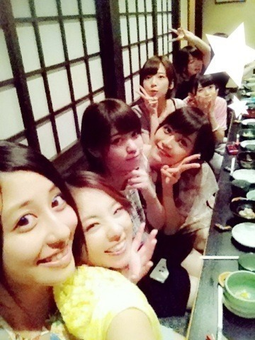

| 2013/08 25 Sun | クイズ再開！！(´> ∀<｀)ゝ |
ちはるーむへようこそ\( ˆoˆ )/
福岡の皆さん！！
昨日は素敵な一日をありがとう！！
ふんわりボブ♪
昼、夜とも全力を出しきれました！
でも出しきれただけでは意味はない。
お客さんみんなが、
楽しかった！！！
また来たいな！！！
今度は友達にも来て欲しい！！！
一生の思い出！！！
ってひとつでも思ってもらえるようになることが目標だから。。
これからも、もっともっと頑張る

よしっ！！！
残りの公演も力いれていくぞ！！
めーちゃん♡(ひめたん)の
お団子なかなか好きd(￣ ￣)
愛未のポニーテールも好きd(￣ ￣)
思わずいつも褒めちゃうほどd(￣ ￣)
(●´-` ●)(●´-` ●)(●´-` ●)(●´-` ●)
クイズ再開！！！
今日のクイズはこの子っっ
誰だかわかるーーー？？？
( ´ ▽ ` )ﾉ
(●´-` ●)(●´-` ●)(●´-` ●)(●´-` ●)
今日は 劇場版 BAD BOYS J を特別に先に観てきちゃいました！！
いやあ〜こんなに面白いものなんかね〜
メンバーも美しいし！！
思わず終わったら拍手があがった
でもなんだか羨ましかった♪
いつかはうちも映画出たいなあ(´･ω･`)
って余計その思いが掻き立てられた！
頑張らなきゃな
皆さんにも是非観てほしいっ
(●´-` ●)(●´-` ●)(●´-` ●)(●´-` ●)
よーしっっ
今日は盛りだくさんだった！！
お昼に東京戻ってきて
着いたら劇場版BAD BOYS J観て
その後、あみ、ずー、川後と(真洋は他に用事あったみたい)
お茶してぶらぶらしてご飯食べて
家帰ってきて24時間テレビ観て
気付いたら寝落ちしてて...笑
盛りだくさんな素敵な一日♪
あのね、寝てたり家でぼーってする時間よりも
外に出掛けてアクティブに動く方が好きだから
ヘトヘトになるまで遊ぶのが全然苦にならないみたい(●´-` ●)
皆さんはどっちーーー？？

(●´-` ●)(●´-` ●)(●´-` ●)(●´-` ●)
じゃね！！
寝ます！！！
あ！最後に！
昨日のご飯、福岡名物！水炊き、横列で


ちはる♡真洋♡ななせ♡まいまい♡ななみん♡飛鳥♡まあや♡
おいしかったから幸せな笑顔

ばいるんっ
るんるんっ
ちはるんっ
(´>∀<｀)ゝ
コメント(306)
2013/08/25 00:30